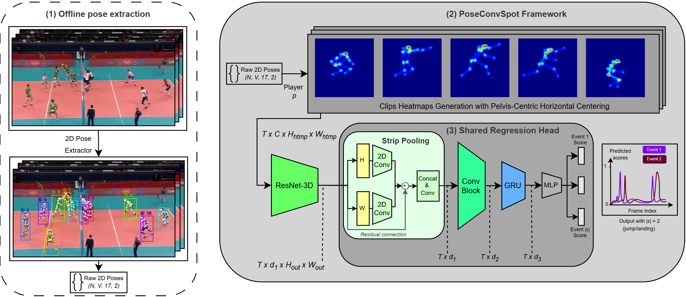

Precise Event Spotting (PES) demands frame-level accuracy for localized actions in sports analytics. Existing RGB pipelines struggle in dense multi-player scenes and are vulnerable to pixel-level domain shifts (lighting, court layouts, camera angles). We propose PoseConvSpot, a pose-only spatio-temporal regression framework tailored for high-fidelity micro-event spotting. Operating exclusively on 2D joint coordinates, our pipeline projects skeletons into spatio-temporal heatmaps that naturally isolate individual actors. Combining directional Strip Pooling, a Shared-Head GRU, and a continuous Soft Gamma Loss, PoseConvSpot isolates biomechanical events without relying on fine-grained visual textures. Evaluations on a multi-sport benchmark show that our method matches state-of-the-art RGB architectures while providing superior cross-arena generalization (+14.1% absolute mAP@3 gain on unseen courts) and peak-focused predictions without heuristic post-processing.

PoseConvSpot decouples event spotting from visual appearance by relying exclusively on 2D kinematic features:
@inproceedings{boussouf2026poseconvspot,
title={PoseConvSpot: Overcoming Domain Shifts in Precise Event Spotting for Sports Videos via Pose-Only Spatio-Temporal Regression},
author={Boussouf, No{\^a}m and Maglo, Adrien and Chaouch, Mohamed and Pham Dang, Paul and Saito, Hideo},
booktitle={Proceedings of the 9th ACM International Workshop on Multimedia Content Analysis in Sports (MMSports '26)},
year={2026},
doi={10.1145/3841455.3841529}
}